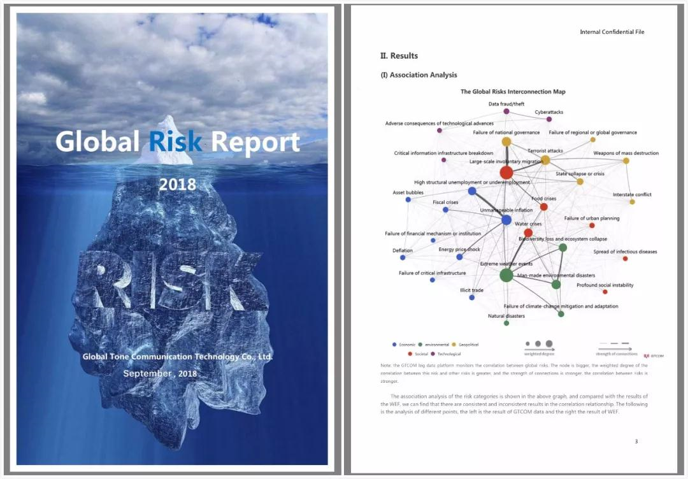

NewsSource:GTCOMDate: 19 September 2018views:253
The World Economic Forum Annual Meeting of the New Champions 2018 and the Tianjin Summer Davos Forum on the theme of "Building an Innovative Society in the Fourth Industrial Revolution" at the Meijiang Convention and Exhibition Center in Tianjin from September 18 to 20, 2018. More than 2,000 representatives from the political, business, academic and media circles in nearly 100 countries and regions attended the meeting. GTCOM CEO Eric Yu was invited to attend. During the forum titled "The Rise of Data Democracy," Mr. Yu, together with industry leaders from the U.S., Britain, France and other countries explored the opportunities and challenges in social governance and services for big data and artificial intelligence.
The World Economic Forum Annual Meeting of the New Champions 2018 and the Tianjin Summer Davos Forum held in Tianjin
The World Economic Forum is an international organization dedicated to promoting public-private partnerships. Founded in 1971, it is headquartered in Geneva, Switzerland. Based on the orientation of the World Economic Forum, the World Economic Forum Annual Meeting, known as the Winter Davos Forum--an event held annually in Switzerland--focuses on hot worldwide issues or trends and is an important window through which to study the latest achievements, theories and trends in global economic development. Based on the Winter Davos Forum, in 2007, the Forum went out of Switzerland and held the Summer Davos Forum in China, i.e. the World Economic Forum Annual Meeting of the New Champions.
The annual meeting is the largest ever World Economic Forum summit dedicated to the Fourth Industrial Revolution. During the meeting, more than 2,000 leaders and representatives from political, business, academic, and art circles in more than 100 countries and regions discussed relevant topics at 200 public and interactive meetings as well as 75 community meetings.
Eric Yu, CEO of GTCOM
The theme of this annual meeting was "Building an Innovative Society in the Fourth Industrial Revolution." At the top of the agenda was to explore the influence of the fourth industrial revolution driven by emerging technologies such as artificial intelligence, the Internet of Things, and genetic editing on economy, society, and geopolitical layout. When big data and artificial intelligence are gradually integrated with social management, how to rely on big data and artificial intelligence to improve the judgment of decision makers becomes a problem that must be considered by practitioners. At the live forum of the "The Rise of Data Democracy," Jennifer Schenker, founder and editor-in-chief of The Innovator, Frida Polli, CEO and co-founder of Pymetrics, Hilary Cottam, founding director of Participle, Igor Tulchinsky, founder, president and CEO of WorldQuant, and Mr. Yu, CEO of GTCOM, discussed thoughts and attempts in this field from the new opportunities of using data and indicators in decision-making and governance, the risks and warnings caused by over-reliance on the use of data and indicators, and how to integrate data and indicators with other decision-making strategies.
Live forum titled "The Rise of Data Democracy"
As a company that emerged in the Internet age and has grown rapidly along with the development of big data, artificial intelligence and other technologies, GTCOM has had a profound influence and many successes in its exploration of global massive data and empowerment through social governance. Thus, as he started his speech, Mr. Yu introduced the data capabilities of GTCOM. Based on a 40-year legacy of historical language data and five years of constant data-asset accumulation, GTCOM has compiled a vast library of heterogeneous data sources, including 120 million pieces of patent data, more than 78 million pieces of patent full-text data, more than 440 million pieces of academic expert data, and knowledge graphs of 10 billion technology entities and entity relationships encompassing 65 languages spoken in more than 200 countries and regions.
Mr. Yu introduced GTCOM's one-year global risk research project. Based on the Global Risk Report published annually by the World Economic Forum, the research endeavored to reveal the world's major risk linkages and future development trends. The World Economic Forum generally obtains its data by organizing interviews and discussions among economic experts each year. Subsequently, through deep learning and neural network technology, GTCOM quantifies the global risks through the steps of human corpus labeling and calibration at the early stage, after which it performs massive calculations and research based on the big-data platform, thus disrupting the traditional questionnaire-based data research methods and achieving major breakthroughs. GTCOM's 2018 Global Risk Study builds a global risk data panorama model based on significant risk issues between June 2017 and May 2018. The model identifies five categories of data in economy, environment, geopolitics, society and technology by their risk definitions based on the identification of risk types worldwide. It then uses neural networks, Naive Bayes and random forest algorithms to further divide the five categories of risk data into four to nine risk subcategories and further quantifies the media reports, sentiment indicators and other factors in the global risk data. The model focuses on the interactions and relationships between the 30 risk subcategories over the past year as well as the likelihood and impact of risk occurrence on a global scale so as to accurately and objectively reflect the significant global risk landscape during that period. Moreover, the study can measure global risk to the level of 100-million real-time calculations.

"The combination of expert wisdom and algorithms is an important factor in the rapid development of artificial intelligence," Mr. Yu said. The integration of GTCOM's leading algorithms with massive technology big data has resulted in the JoveEye knowledge-service platform for scientific research, whose integration with massive financial big data in turn led to the JoveBird Financial Big Data. Mr. Yu said that GTCOM's big data products--JoveEye and JoveBird--use the data from the past 20 years to measure and analyze patents and currency circulation as well as to predict market trends and the prices of crude oil and stock. The results of these analyses can be applied to economic decision-making. These contents are exactly concrete manifestations of big data in social governance and services.
Mr. Yu, in addressing the forum, also talked about his views on hot topics such as medical big data, privacy protection and data ethics in combination with practice. Moreover, he noted that this is the first time he has spoken publicly about his Data PolyPhyletic Theory.
Turing Award winner Raj Reddy, a professor at the Carnegie Mellon University School of Computer Science, characterized the next-generation artificial intelligence system as one driven by data. Given such a perspective, when the system has the processing capacity of global massive data, its prospects are limitless with respect to social governance and services.
The Annual Meeting of the New Champions is the flagship brand of the World Economic Forum. Its goal is to gather together global growth companies to plan the future development of industry and commerce. The New Champions event is held annually in China, and thus reflects the World Economic Forum's concern for Asia and the emerging new economies and thus demonstrates China's ever-greater global influence. As a member of the World Economic Forum, GTCOM has attended several editions of the Summer Davos Forum, consistently portraying the enthusiasm and determination of a Chinese technology company to stand at the forefront of a new round of technological revolution on this international exchange platform. Accordingly, GTCOM will continuously expand its core competitiveness based on big data, artificial intelligence and language technology so as to provide leading solutions for users worldwide and promote the industry's development.